- Переход с MacDiveКакой файл экспортировать и как перейти, ничего не потеряв.
- Загрузка с компьютераShearwater и другие компьютеры с Bluetooth или кабель на Mac.
- Garmin DescentИмпорт файлов .fit с часов или из Garmin Connect.
Что-то не работает? См. Решение проблем. Thermocline — это логбук: он показывает то, что записал ваш дайв-компьютер, и никогда не рассчитывает декомпрессию.
Установка приложения
Thermocline предназначен только для устройств Apple: iPhone, iPad, Mac и Apple Watch. Во время беты он устанавливается через приложение TestFlight от Apple.
| Задача | iPhone и iPad | Mac |
|---|---|---|
| Присоединиться к бете | Присоединиться к бете: одна ссылка для iPhone, iPad, Mac и Apple Watch. Откройте её на каждом устройстве и установите из TestFlight. Приложение для Apple Watch устанавливается вместе с приложением для iPhone. Все устройства используют один и тот же логбук через iCloud. | |
| Присоединились к бете для iPhone до 18 ноября 2026 г. | То приложение переехало. См. переход со старого приложения для iPhone. | |
| Обновления | Когда TestFlight предлагает новую сборку, обновите все устройства, которыми пользуетесь. Старая сборка перестаёт отправлять изменения, пока её не обновят, и сообщает об этом. Ничего не теряется. | |
Первый запуск и обзор
При первом запуске приложение спрашивает ваше имя, единицы измерения и откуда берутся ваши погружения. Данные хранятся в метрических единицах; смена единиц меняет только отображение.
| Задача | iPhone и iPad | Mac |
|---|---|---|
| Настройки | Вкладка Профиль | Thermocline → Настройки |
| Обзор | Профиль → Справка → Показать обзор | Справка → Пройти обзор |
Обзор проводит по всем экранам на примере логбука, а не вашего.
Снимки экрана на этой странице показывают пример логбука из обзора: погружения и дайв-сайты вымышлены. Коснитесь снимка, чтобы увидеть его в полном размере.

Перенос логбука
Thermocline читает MacDive (его папку, XML или UDDF), базу данных Shearwater Cloud, файлы Garmin .fit, UDDF из любого логбука и CSV. Вы выбираете, какие погружения добавить, а всё, что не удалось прочитать, показывается списком и никогда не отбрасывается молча.
| Задача | iPhone и iPad | Mac |
|---|---|---|
| Импорт файла | Профиль → Ваши данные → Импортировать файл логбука, затем выберите файл в iCloud Drive или Файлах. | Команда импорта в меню «Файл» (⇧⌘I). |
| Файлы Garmin .fit | Выберите сразу несколько. | Выберите несколько файлов или целую папку. |
| Папка MacDive с фото | Только на Mac. Перенесите фото позже с помощью приложения для Mac. | Файл → Импорт из MacDive… и выберите папку MacDive: погружения, фото погружений и фото карточек. Файлы MacDive не изменяются. |
| Выбор погружений | Снимите отметку с ненужных, затем нажмите Импорт. | |
| Отмена импорта | Точка восстановления Перед импортом, сохраняемая перед любым импортом более одного погружения. | Отменить импорт… в отчёте об импорте или та же точка восстановления. |
Когда импорт завершится, отчёт покажет, сколько погружений добавлено, какие элементы не импортированы и почему, а также всё, что нужно проверить. Погружения, в файле которых не было газа, ждут в разделе «Проверить».
Какой файл MacDive использовать
MacDive может дать вам свой XML, свой UDDF или (на Mac) всю свою папку. Они содержат не одно и то же:
| Что содержит | MacDive XML | MacDive UDDF | Папка MacDive (Mac) |
|---|---|---|---|
| Погружения, дайв-сайты, напарники, газы | Да | Да | Да |
| Объёмы баллонов | Да | Нет: его объёмы — не объёмы по воде, поэтому они остаются пустыми | Да |
| Профили глубины | Все погружения | Все погружения | Все, кроме погружений, которые MacDive загрузил на iPhone или iPad: их он хранит в зашифрованном виде |
| NDL и ppO₂ компьютера по ходу погружения | Да | Нет | Да, кроме тех зашифрованных погружений |
| CNS компьютера | Да | Нет | Да |
| Снаряжение, теги и типы погружений | Да | Нет | Да |
| Фото погружений и карточек | Нет | Нет | Да |
| Задача | iPhone и iPad | Mac |
|---|---|---|
| Лучший путь | Экспортируйте погружения из MacDive в XML, сохраните файл в iCloud Drive и импортируйте его. | Импортируйте папку MacDive, затем поверх неё XML. XML заполнит профили, NDL и ppO₂ зашифрованных погружений. |
| UDDF уже импортирован | Импортируйте и XML. Погружения, которые уже есть в логбуке, сопоставляются, а не добавляются заново, и заполняется только недостающее, включая объёмы баллонов. Ничего из того, что вы ввели или исправили, не изменяется. | |
Часы Garmin Descent
Garmin Descent хранит один файл .fit на каждое погружение. Получить их можно двумя способами:
- С часов: подключите их к Mac кабелем и откройте папку GARMIN → Activity. На Mac можно импортировать всю папку GARMIN; файлы, которые не являются погружениями, например пробежки и настройки, пропускаются.
- Из Garmin Connect: откройте погружение и выберите Экспорт оригинала. Получится файл .zip: сначала распакуйте его, затем импортируйте файл .fit внутри.
Координаты берутся из GPS часов. В дрейфовом погружении часы сохраняют как начало место, где вы всплыли; импорт находит, где вы на самом деле вошли в воду, поэтому погружение сопоставляется с тем дайв-сайтом. Другие затонувшие суда, мимо которых вы проплыли, добавьте в заметки.

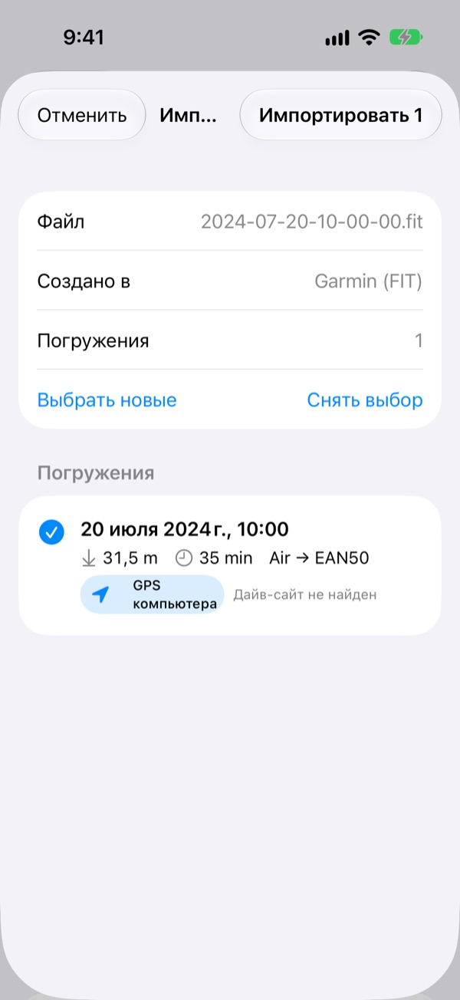
Загрузка погружений с компьютера
Сначала переведите дайв-компьютер в режим Bluetooth. На Shearwater: Menu → Bluetooth. Он остаётся в этом режиме около двух минут. Загружаются только погружения новее вашей последней загрузки.
| Задача | iPhone и iPad | Mac |
|---|---|---|
| Открыть | Логбук → Загрузить погружения | Файл → Загрузить с дайв-компьютера… (⇧⌘D) |
| Подключить | Bluetooth. Выберите свой компьютер в разделе Рядом; в первый раз введите PIN-код, показанный на его экране. | Выберите Bluetooth или USB-кабель. Для кабеля выберите модель компьютера и его порт и выполните шаги Перед началом. |
| Завершить | Снимите отметку с ненужных погружений, затем нажмите Сохранить. Погружения без отметки остаются на компьютере и будут предложены снова в следующий раз. | Загрузить. |
Вопрос о часах. При первой загрузке с каждого компьютера приложение спрашивает: На какой часовой пояс настроены часы компьютера? Большинство компьютеров записывают местное время без часового пояса, поэтому так время ваших погружений остаётся верным, когда вы путешествуете. Ответ запоминается для этого компьютера.
Выбрав погружения, можно пройти их по одному, чтобы указать дайв-сайт и газы, или нажать Закончить позже: они будут ждать в разделе «Проверить».
Удалили погружение и хотите вернуть его? Включите Загрузить все погружения с компьютера. Это дольше; погружения, которые уже есть в логбуке, пропускаются.

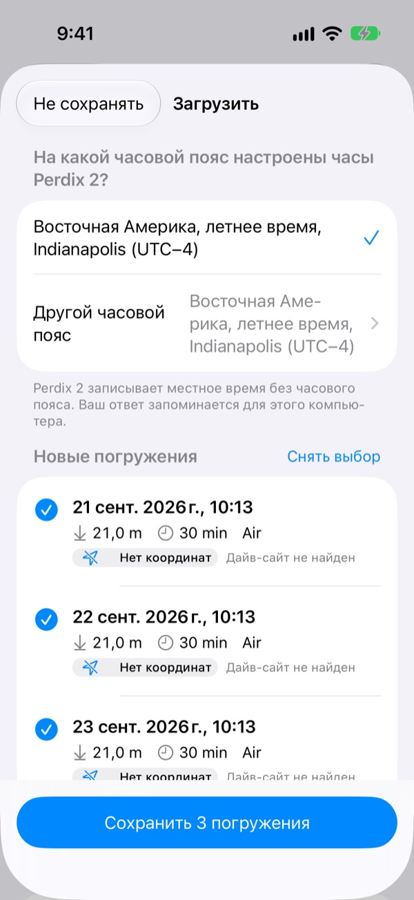
Shearwater Predator и Petrel 1
Они используют старый Bluetooth (Bluetooth Classic), с которым iPhone и iPad работать не могут. На Mac сначала создайте пару с компьютером в Системных настройках → Bluetooth, затем выберите USB-кабель в окне загрузки: его порт может появиться в списке. Переведите компьютер в режим выгрузки по Bluetooth и выберите «Загрузить». Это ещё не проверялось на реальном Predator или Petrel 1, поэтому, пожалуйста, отправьте лог загрузки, получится или нет. На iPhone вместо этого импортируйте их погружения из Shearwater Cloud или файла UDDF.
Поддерживаемые компьютеры
Thermocline загружает погружения с помощью libdivecomputer — библиотеки с открытым кодом, которую используют многие логбуки. Она знает несколько сотен моделей большинства производителей. Чтобы найти свою, откройте экран загрузки и выберите Поддерживаемые компьютеры; для каждой модели указано, работает ли она на iPhone и iPad или ей нужен Mac.
| Подключение | Где работает | Проверено на данный момент |
|---|---|---|
| Bluetooth LE | iPhone, iPad и Mac | Shearwater Perdix и Perdix 2. Другие модели должны работать: сообщите нам. |
| USB или последовательный кабель | Только Mac | Сделано, но ещё не проверено на реальном оборудовании. |
| Bluetooth Classic (Predator, Petrel 1 и другие старые модели) | Только Mac, в паре как последовательный порт (как) | Ещё не проверялось. |
| Garmin Descent (файлы .fit) | Импорт на iPhone, iPad и Mac (как) | Погружения Descent, включая дрейфовые. |
Есть компьютер, который мы ещё не проверяли? Помогите нам его протестировать.
Подтверждение дайв-сайта и газов
Погружения, у которых ещё нет дайв-сайта или подтверждённых газов, ждут в разделе Проверить. Ничто не мешает их сохранению; заполните их, когда захотите.
| Задача | iPhone и iPad | Mac |
|---|---|---|
| Где их найти | Вверху вкладки Логбук, в разделе Проверить. | Переход → Проверить (⌘2) |
| Подтвердить | Откройте погружение, затем Выбрать дайв-сайт и коснитесь Да, эти газы верны (или Исправить газ…). | Баннер на каждом погружении предлагает Подтвердить дайв-сайт и газы…, Выбрать дайв-сайт… или Подтвердить газы…. |
Thermocline предлагает дайв-сайт по координатам погружения: сначала ваши собственные дайв-сайты, затем встроенные списки более чем 76 000 дайв-сайтов и затонувших судов, которые работают без сети.

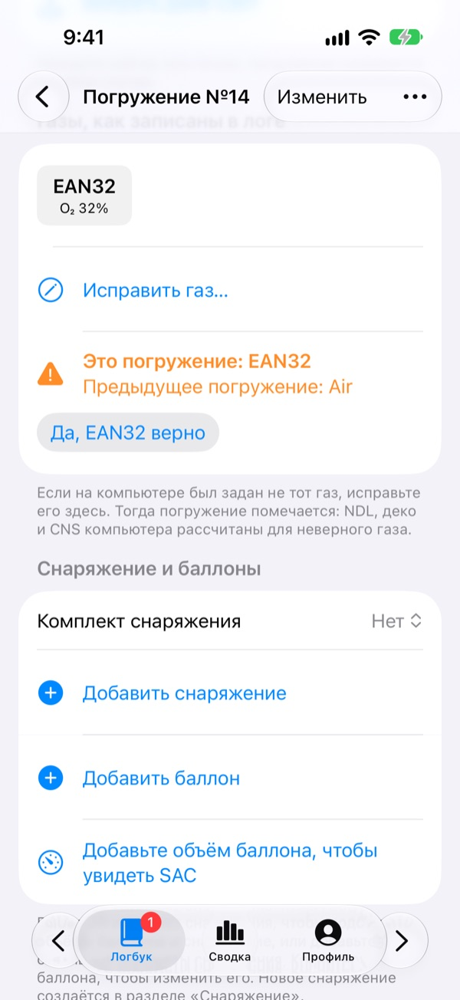
Чтение погружения
| Задача | iPhone и iPad | Mac |
|---|---|---|
| Прочитать любой момент | Проведите пальцем по графику. | Наведите указатель на график. |
| Записать погружение вручную | Логбук → Записать вручную | ⌘N |
- Значения безопасности находятся в фиксированной полосе вверху каждого погружения, всегда на одном и том же месте.
- Профиль: кнопки под графиком показывают или скрывают Баллон, ppO₂, NDL, SAC, Темп., CNS и Всплытие — Раздельно полосами или одним графиком Совмещённо. Кнопку получает только то, что записано в погружении. NDL — собственное значение компьютера, и во время деко оно прерывается, а красная полоса показывает остановки. На узком iPhone кнопки остаются в одной строке и прокручиваются вбок. Попробуйте на главной странице.
- Ребризеры: с любого компьютера или из любого файла, которые их записывают, полоса ppO₂ показывает сетпоинт вместе с итоговым (voted) ppO₂ (и каждый сенсор, если он записан), а показание даёт сетпоинт в этот момент. Переключение с дилюента на любой другой газ помечается как bailout.
- Расход газа: коснитесь или нажмите Как? рядом со значением SAC, чтобы увидеть все исходные данные: баллон, его объём по воде, давления, температуру и поправку на реальный газ.
- Правка: изменить можно любое погружение. Исправление сохраняет исходное показание компьютера.
- Груз: первое касание + устанавливает Без груза — для погружения совсем без груза. Касание − оттуда очищает значение.
- Ссылки в заметках: веб-ссылки в заметках погружения можно коснуться или нажать. Когда закончите ввод, коснитесь Готово над клавиатурой: тогда ссылки отобразятся, а для ссылки YouTube или Vimeo под заметками появится кнопка Добавить … в ссылки на видео. Чтобы снова вводить текст в заметках, выберите Изменить заметки.

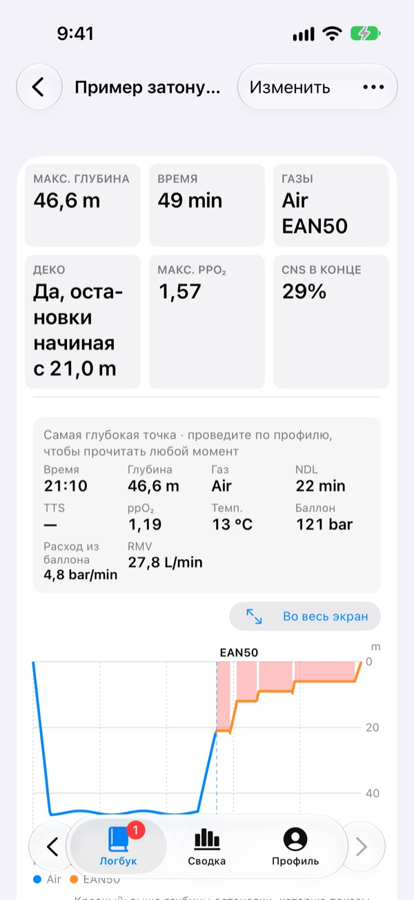

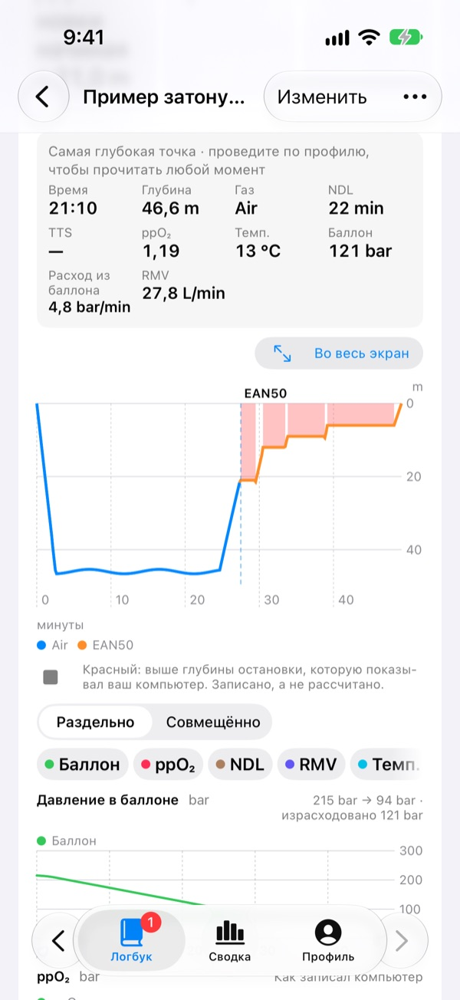

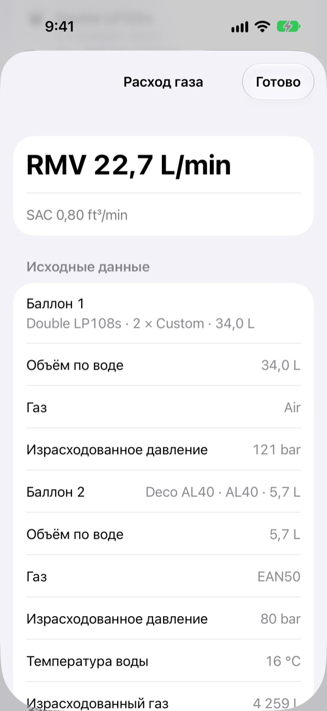

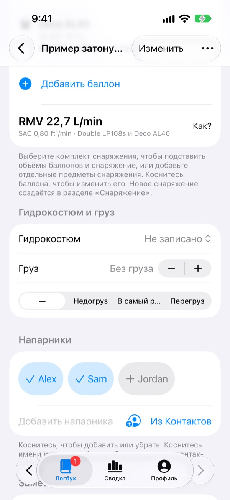


Дайв-сайты, координаты и Apple Watch
| Задача | iPhone и iPad | Mac |
|---|---|---|
| Добавить дайв-сайт | Профиль → Дайв-сайты, затем кнопка добавления: Найти или назвать дайв-сайт или Отметить точку здесь (GPS). | Переход → Дайв-сайты (⌘4), затем Добавить дайв-сайт… |
| Увидеть все дайв-сайты из списков | Профиль → Дайв-сайты → Карта, затем кнопка глобуса, или сведите пальцы до конца. Затонувшие суда — оранжевые, рифы и дайв-сайты — синие, ваши собственные дайв-сайты — красные флажки. | Дайв-сайты, затем Показать глобус на панели инструментов или уменьшите масштаб до конца. |
| Найти координаты | Дайв-сайт без координат предлагает Найти координаты: проверьте предложение на карте, введите координаты или поставьте булавку. | Найти координаты… проходит по всем дайв-сайтам без координат, по одному. |
Apple Watch: отметьте точку на поверхности, и она будет ждать на iPhone в разделе «Проверить». См. Apple Watch.
Координаты дайв-сайтов предназначены для ведения записей, а не для навигации.

Apple Watch
Приложение для часов делает одно: отмечает, где вы находитесь на поверхности, чтобы дайв-сайт погружения было легко записать. Оно не записывает погружения: их даёт ваш дайв-компьютер. Ему нужна watchOS 11 или новее и iPhone с Thermocline.
| Задача | Apple Watch | iPhone |
|---|---|---|
| Установка | Оно устанавливается вместе с приложением для iPhone. Если его нет на часах, откройте приложение Watch на iPhone, найдите Thermocline в разделе Доступные приложения и коснитесь Установить. В первый раз разрешите Thermocline доступ к геопозиции на часах. | |
| Отметить точку | На поверхности, над дайв-сайтом, откройте Thermocline. Дождитесь Хороший фикс, затем коснитесь Отметить точку. Когда точка сохранится, часы коснутся вашего запястья. | Точка приходит сама. Если iPhone вне досягаемости, она будет отправлена, когда они снова окажутся рядом. |
| Дать название | Необязательно. Коснитесь Добавить название после отметки или позже в разделе Отметки и продиктуйте, напишите от руки или введите его, например «нос затонувшего судна». Оно сохраняется, когда вы закончите. | Название предлагается как название нового дайв-сайта. Можно использовать его или выбрать другой дайв-сайт. |
| Подтвердить | На часах ничего делать не нужно. | Логбук → Проверить. Когда iPhone в сети, он ищет точку, предлагает ближайший известный дайв-сайт и показывает погружение, к которому она скорее всего относится. Подтвердите или отклоните её. |
| Проверить отправку | Отметки показывает каждую точку с пометкой Отправлено на iPhone или Ждёт отправки на iPhone и карту. Точка удаляется с часов, когда её подтвердят или отклонят на iPhone. | После подтверждения дайв-сайт синхронизируется с другими вашими устройствами, как любой другой. |

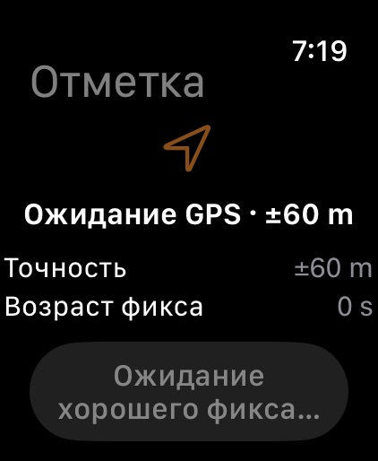

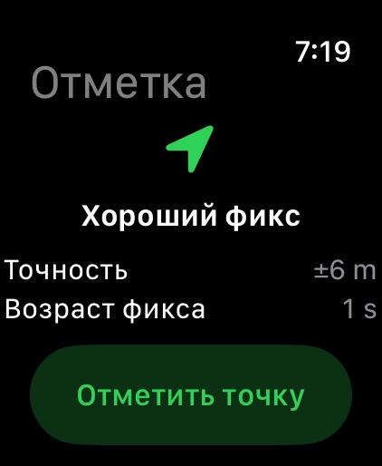

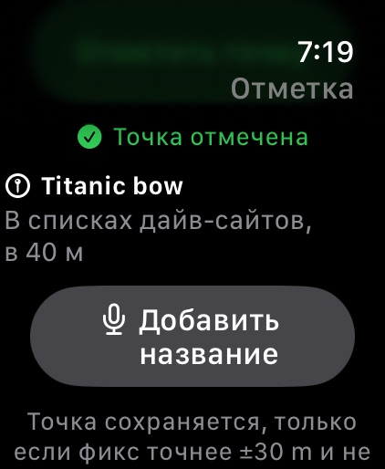

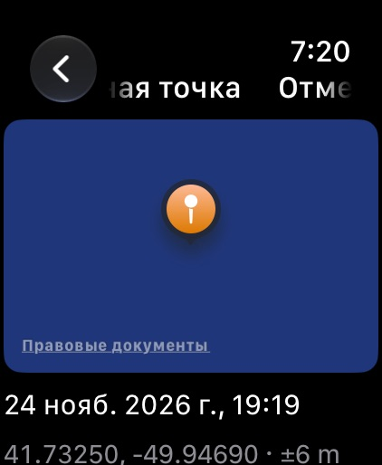
Часы сохраняют точку, только если фикс точнее ±30 m и не старше 30 секунд, и не используют старые координаты из кэша. Отмечайте точку на поверхности, а не под водой.
Координаты дайв-сайтов предназначены для ведения записей, а не для навигации.
Снаряжение и баллоны
| Задача | iPhone и iPad | Mac |
|---|---|---|
| Открыть снаряжение | Профиль → Снаряжение | Переход → Снаряжение |
- У баллона поле Модель открывает каталог баллонов: ищите по производителю или модели (например, «PST LP104»), чтобы заполнить опубликованные размеры, или введите свои цифры.
- Отметьте Спарка для спаренных баллонов.
- Стальной баллон с выбитым +: включите Маркировка «+», если последнее гидроиспытание сохранило +. Он отображается, например, как 2400+. Этот переключатель появляется, когда объёмы баллонов показываются в кубических футах.
- Баллоны каждого погружения находятся в разделе газов погружения (Добавить баллон, Комплект снаряжения).
Объединение и соединение погружений
- Объединить — для одного погружения, записанного двумя компьютерами. Сохраняются обе записи, и между ними можно переключаться на графике.
- Соединить — для одного погружения, разделённого на два коротким всплытием.
- Thermocline никогда не делает ни то, ни другое сам. Когда он замечает вероятную пару, баннер вверху логбука предлагает Проверить её.
| Задача | iPhone и iPad | Mac |
|---|---|---|
| Сделать самому | Коснитесь Выбрать, выберите два погружения, затем Объединить или Соединить. | Выберите два погружения и нажмите правой кнопкой: Объединить эти погружения… или Соединить эти погружения… |
| Передумали | Отменить сразу же или Разделить эти погружения в погружении в любое время. | |
Фото и ссылки на видео
- Добавить фото в погружении копирует фото из вашей медиатеки в логбук.
- Чтобы сэкономить место в iCloud, включите Синхронизация → Экономить место в iCloud на фото погружений на каждом устройстве. Тогда фото связываются с Фото iCloud, а не копируются, и можно добавлять видео из медиатеки. Thermocline запрашивает доступ к Фото, только когда вы включаете эту настройку.
- Ссылки на видео: вставьте ссылку YouTube или Vimeo под фото погружения. Сохраняется только ссылка. Ссылку, которая уже есть в заметках, можно добавить оттуда (см. Чтение погружения).
- Одно видео в нескольких погружениях: выберите погружения (на iPhone сначала коснитесь «Выбрать»), выберите Изменить … погружения… и добавьте ссылку в разделе Ссылки на видео. Она добавляется ко всем выбранным погружениям, а уже имеющиеся у них ссылки сохраняются.
Сводка и дыхание
Вкладка Сводка («Сводка» в боковом меню Mac) подсчитывает ваш логбук: погружения по годам и месяцам, глубины, газы, рекорды, где вы ныряете, а также самый частый дайв-сайт и напарника. Выберите период вверху, например один год, и коснитесь любого числа или столбца, чтобы увидеть стоящие за ним погружения.
- Дыхание показывает ваши SAC и RMV по всем погружениям периода, у которых указаны объём баллона, начальное и конечное давление, с весом по времени и глубине. Коснитесь, чтобы увидеть, какие погружения учтены.
- У некоторых импортированных погружений нет объёма баллона, поэтому «Дыхание» поначалу может быть пустым (см. Какой файл MacDive использовать). Укажите баллоны в своих погружениях — в снаряжении или в каждом погружении, — и оно заполнится.

Синхронизация с iCloud
| Задача | iPhone и iPad | Mac |
|---|---|---|
| Включить синхронизацию | Профиль → Синхронизация | Thermocline → Настройки → Синхронизация |
После этого все устройства, где выполнен вход в один и тот же Аккаунт Apple, используют один логбук, хранящийся в вашем собственном личном iCloud. Изменения, сделанные без сети, ждут на устройстве и отправляются, когда оно снова в сети.
Раздел «Синхронизация» показывает состояние, всё, что Ожидает отправки, и совпадают ли это устройство и ваши другие. Синхронизировать сейчас проверяет сразу.

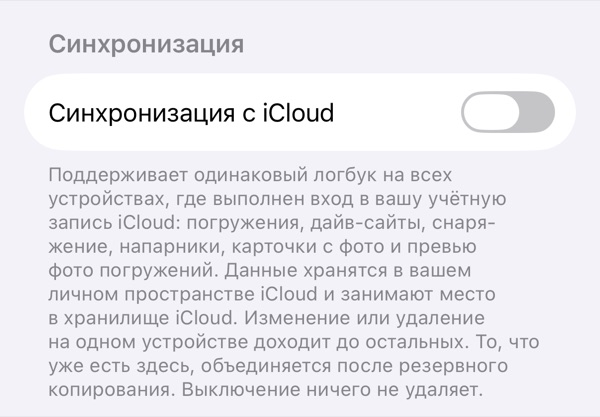
Экспорт, точки восстановления и стирание
| Задача | iPhone и iPad | Mac |
|---|---|---|
| Экспорт | Профиль → Ваши данные | Меню «Файл» |
| Точки восстановления | Профиль → Ваши данные → Точки восстановления | Настройки → Ваши данные → Точки восстановления |
- Экспорт: UDDF — полный экспорт и ваш путь в любой логбук. Также доступны: таблица (CSV), MacDive XML, закладки для пещерной съёмки (CSV) и сводка опыта (текст) для требований курсов.
- Точки восстановления: точка сохраняется перед включением синхронизации, перед большим импортом, объединением, соединением, стиранием и перед любым удалением. Восстановление сначала сохраняет текущий логбук как точку восстановления, поэтому его можно отменить.
- Стирание: Стереть логбук… предлагает сначала сделать экспорт. Если синхронизация включена, ваши другие устройства последуют за ним.

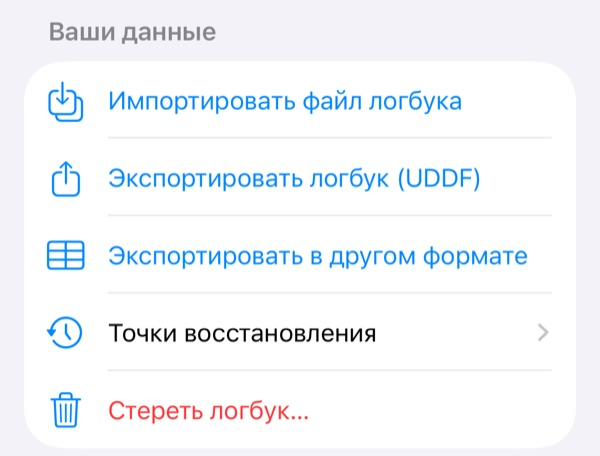
Всё ещё не получается?
См. Решение проблем или отправьте отзыв из TestFlight или на brian@616labs.net.